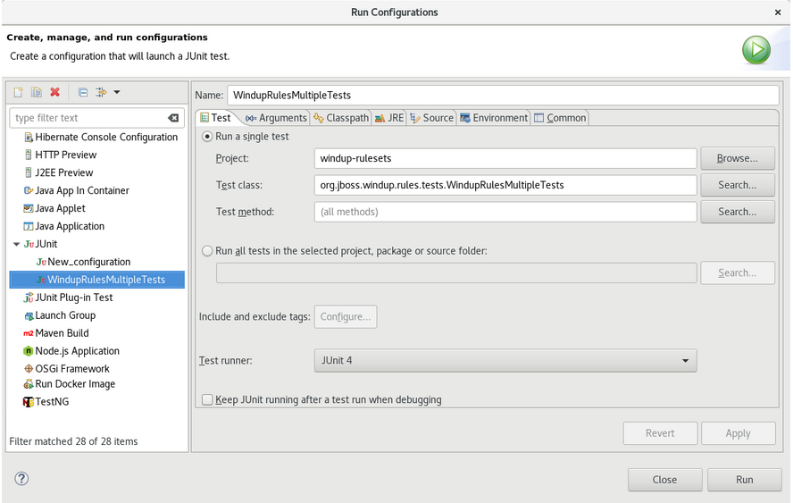
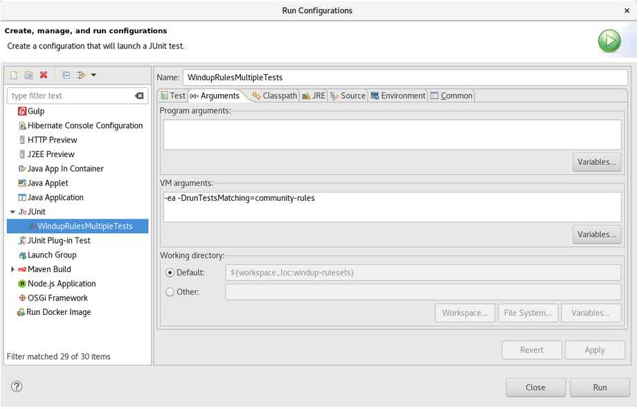

Making open source more inclusive
Red Hat is committed to replacing problematic language in our code, documentation, and web properties. We are beginning with these four terms: master, slave, blacklist, and whitelist. Because of the enormity of this endeavor, these changes will be implemented gradually over several upcoming releases. For more details, see our CTO Chris Wright’s message.
1. Introduction
1.1. About the Rule Development Guide
This guide is intended for software engineers who want to create custom YAML-based rules for Migration Toolkit for Applications (MTA) tools.
See the Introduction to the Migration Toolkit for Applications for an overview and the CLI Guide for details.
1.1.1. Use of <MTA_HOME> in this guide
This guide uses the <MTA_HOME> replaceable variable to denote the path to your MTA installation.
The mta-7.0.1-cli<OS>.zip* extracts a single binary called mta-cli.
When you encounter <MTA_HOME> in this guide, replace it with the actual path to your MTA installation.
1.2. The MTA rules
The Migration Toolkit for Applications (MTA) contains rule-based migration tools (analyzers) that you can use to analyze the application user interfaces (APIs), technologies, and architectures used by the applications you plan to migrate. MTA analyzer rules use the following rule pattern:
when(condition) message(message) tag(tags)
You can use the MTA rules internally to perform the following tasks:
-
Extract files from archives.
-
Decompile files.
-
Scan and classify file types.
-
Analyze XML and other file content.
-
Analyze the application code.
-
Build the reports.
MTA builds a data model based on the rule execution results and stores component data and relationships in a graph database. This database can then be queried and updated as required by the migration rules and for reporting purposes.
|
Note
|
You can create your own custom analyzer rules. You can use custom rules to identify the use of custom libraries or other components that might not be covered by the provided standard migration rules. |
2. Creating YAML rules
Each analyzer rule is a set of instructions that are used to analyze source code and detect issues that are problematic for migration.
The analyzer parses user-provided rules, applies them to applications' source code, and generates issues for matched rules. A collection of one or more rules forms a ruleset. Creating rulesets provides a way of organizing multiple rules that achieve a common goal. The analyzer CLI takes rulesets as input arguments.
2.1. YAML rule structure and syntax
MTA rules are written in YAML. Each rule consists of metadata, conditions and actions, which instruct the analyzer to take specified actions when given conditions match.
A YAML rule file in MTA contains one or more YAML rules.
2.1.1. Rule metadata
Rule metadata contains general information about the rule. The structure of metadata is as follows:
ruleId: "unique_id" (1)
labels: (2)
# key=value pair
- "label1=val1"
# valid label with value omitted
- "label2"
# valid label with empty value
- "label3="
# subdomain prefixed key
- "konveyor.io/label1=val1"
effort: 1 (3)
category: mandatory (4)-
The ID must be unique within the ruleset to which the rule belongs.
-
See below for a description of the label format.
-
effortis an integer value that indicates the level of effort needed to fix this issue. -
categorydescribes the severity of the issue for migration. The value can be eithermandatory,optionalorpotential. For a description of these categories, see Rule categories.
Rule labels
Labels are key=val pairs specified for rules or rulesets as well as dependencies. For dependencies, a provider adds the labels to the dependencies when retrieving them. Labels on a ruleset are automatically inherited by all the rules that belong to it.
Labels are specified under the labels field as a list of strings in key=val format as follows:
labels:
- "key1=val1"
- "key2=val2"The key of a label can be subdomain-prefixed:
labels:
- "konveyor.io/key1=val1"The value of a label can be empty:
labels:
- "konveyor.io/key="The value of a label can be omitted. In that case, it is treated as an empty value:
labels:
- "konveyor.io/key"The analyzer defines some labels that have special meaning as follows:
-
konveyor.io/source: Identifies the source technology to which a rule or a ruleset applies -
konveyor.io/target: Identifies the target technology to which a rule or a ruleset applies
The analyzer CLI takes the --label-selector field as an option. It is a string expression that supports logical AND, OR and NOT operations. You can use it to filter-in or filter-out rules by their labels.
Examples:
-
To filter-in all rules that have a label with the key
konveyor.io/sourceand valueeap6:--label-selector="konveyor.io/source=eap6" -
To filter-in all rules that have a label with the key
konveyor.io/sourceand any value:--label-selector="konveyor.io/source" -
To perform logical AND operations on matches of multiple rules using the
&&operator:--label-selector="key1=val1 && key2" -
To perform logical OR operations on matches of multiple rules using the
||operator:--label-selector="key1=val1 || key2" -
To perform a NOT operation to filter-out rules that have
key1=val1label set using the!operator:--label-selector="!key1=val1" -
To group sub-expressions and control precedence using AND:
--label-selector="(key1=val1 || key2=val2) && !val3"
The analyzer engine adds labels to dependencies. These labels provide additional information about a dependency, such as its programming language and whether the dependency is open-source or internal.
Currently, the analyzer adds the following labels to dependencies:
labels:
- konveyor.io/dep-source=internal
- konveyor.io/language=javaThe analyzer CLI accepts the --dep-label-selector option, which allows filtering-in or filtering-out incidents generated from a dependency by their labels.
For example, the analyzer adds a konveyor.io/dep-source label to dependencies with a value that indicates whether the dependency is a known open-source dependency.
To exclude incidents for all such open-source dependencies, you can use --dep-label-selector as follows:
konveyor-analyzer … --dep-label-selector !konveyor.io/dep-source=open-source
The Java provider in the analyzer can also add an exclude label to a list of packages. To exclude all such packages, you can use --dep-label-selector and the ! operator as follows:
konveyor-analyzer … --dep-label-selector !konveyor.io/exclude
Rule categories
-
mandatory-
You must resolve the issue for a successful migration, otherwise, the resulting application is not expected to build or run successfully. An example of such an issue is proprietary APIs that are not supported on the target platform.
-
-
optional-
If you do not resolve the issue, the application is expected to work, but the results might not be optimal. If you do not make the change at the time of migration, you need to put it on the schedule soon after your migration is completed. An example of such an issue is EJB 2.x code not upgraded to EJB 3.
-
-
potential-
You need to examine the issue during the migration process, but there is not enough information to determine whether resolving the issue is mandatory for the migration to succeed. An example of such an issue is migrating a third-party proprietary type when there is no directly compatible type on the target platform.
-
Rule Actions
Rules can include 2 types of actions: message and tag. Each rule includes one of them or both.
A message action creates an issue with a message when the rule matches. The custom data exported by providers can also be used in the message.
message: "helpful message about the issue"
Example:
- ruleID: test-rule
when:
<CONDITION>
message: Test rule matched. Please resolve this migration issue.Optionally, a message can include hyperlinks to external URLs that provide relevant information about the issue or a quick fix.
links:
- url: "konveyor.io"
title: "Short title for the link"A message can also be a template to include information about the match interpolated through custom variables on the rule.
A tag action instructs the analyzer to generate one or more tags for the application when a match is found. Each string in the tag field can be a comma-separated list of tags. Optionally, you can assign categories to tags.
tag:
- "tag1,tag2,tag3"
- "Category=tag4,tag5"Example
- ruleID: test-rule
when:
<CONDITION>
tag:
- Language=Golang
- Env=production
- Source CodeA tag can be a string or a key=val pair, where the key is treated as a tag category in MTA. Any rule that has a tag action is referred to as a “tagging rule” in this document.
Note that issues are not created for rules that contain only tag actions.
Rule conditions
Each rule has a when block, which specifies a condition that needs to be met for MTA to perform a certain action.
The when block contains one condition, but that condition can have multiple conditions nested under it.
when:
<condition>
<nested-condition>MTA supports three types of conditions: provider, and, and or.
Provider conditions
MTA supports multi-language source code analysis. Searching for a specific language in the source code is enabled using the provider condition. This condition defines a search query for a specific language provider. The provider condition also specifies which of the provider’s "capabilities" to use for analyzing the code.
The provider condition has the form <provider_name>.<capability>:
when:
<provider_name>.<capability>
<input_fields>The analyzer currently supports the following provider conditions:
-
builtin -
java -
go
builtin providerbuiltin is an internal provider that can analyze various files and internal metadata generated by the engine.
This provider has the following capabilities:
-
file -
filecontent -
xml -
json -
hasTags
fileThe file capability enables the provider to search for files in the source code that match a given pattern.
when:
builtin.file:
pattern: "<regex_to_match_filenames>"filecontentThe filecontent capability enables the provider to search for content that matches a given pattern.
when:
builtin.filecontent:
filePattern: "<regex_to_match_filenames_to_scope_search>"
pattern: "<regex_to_match_content_in_the_matching_files>"xmlThe xml capability enables the provider to query XPath expressions on a list of provided XML files. This capability takes 2 input parameters, xpath and filepaths.
when:
builtin.xml:
xpath: "<xpath_expressions>" (1)
filepaths: (2)
- "/src/file1.xml"
- "/src/file2.xml"-
xpathmust be a valid XPath expression. -
filepathsis a list of files to apply the XPath query to.
jsonThe json capability enables the provider to query XPath expressions on a list of provided JSON files. Currently, json only takes XPath as input and performs the search on all JSON files in the codebase.
when:
builtin.json:
xpath: "<xpath_expressions>" (1)-
xpathmust be a valid XPath expression.
hasTagsThe hasTags capability enables the provider to query application tags. It queries the internal data structure to check whether the application has the given tags.
when:
# when more than one tags are given, a logical AND is implied
hasTags: (1)
- "tag1"
- "tag2"-
When more than one tags is given, a logical AND is implied.
java providerThe java provider analyzes Java source code.
This provider has the following capabilities:
-
referenced -
dependency.
referencedThe referenced capability enables the provider to find references in the source code. This capability takes two input parameters, pattern and location.
when:
java.referenced:
pattern: "<pattern>" (1)
location: "<location>" (2)-
A RegEx pattern to match, for example,
org.kubernetes.* -
Specifies the exact location where the pattern needs to be matched, for example,
IMPORT
The supported locations are the following:
-
CONSTRUCTOR_CALL -
TYPE -
INHERITANCE -
METHOD_CALL -
ANNOTATION -
IMPLEMENTS_TYPE -
ENUM_CONSTANT -
RETURN_TYPE -
IMPORT -
VARIABLE_DECLARATION
dependencyThe dependency capability enables the provider to find dependencies for a given application. MTA generates a list of the application’s dependencies, and you can use this capability to query the list and check whether a certain dependency exists for the application within a given range of the dependency’s versions.
when:
java.dependency:
name: "<dependency_name>" (1)
upperbound: "<version_string>" (2)
lowerbound: "<version_string>" (3)-
Name of the dependency to search for
-
Upper bound on the version of the dependency
-
Lower bound on the version of the dependency
go providerThe go provider analyzes Go source code. This provider’s capabilities are referenced and dependency.
referencedThe referenced capability enables the provider to find references in the source code.
when:
go.referenced: "<regex_to_find_reference>"dependencyThe dependency capability enables the provider to find dependencies for an application.
when:
go.dependency:
name: "<dependency_name>" (1)
upperbound: "<version_string>" (2)
lowerbound: "<version_string>" (3)-
Name of the dependency to search for
-
Upper bound on the version of the dependency
-
Lower bound on the version of the dependency
Custom variables
Provider conditions can have associated custom variables. You can use custom variables to capture relevant information from the matched line in the source code. The values of these variables are interpolated with data matched in the source code. These values can be used to generate detailed templated messages in a rule’s action (see Message actions). They can be added to a rule in the customVariables field:
- ruleID: lang-ref-004
customVariables:
- pattern: '([A-z]+)\.get\(\)' (1)
name: VariableName (2)
message: "Found generic call - {{ VariableName }}" (3)
when:
java.referenced:
location: METHOD_CALL
pattern: com.example.apps.GenericClass.get-
pattern: A RegEx pattern that is matched on the source code line when a match is found -
name: The name of the variable that can be used in templates -
message: A template for a message using a custom variable
Logical conditions
The analyzer provides two basic logical conditions, and and or, which enable you to aggregate results of other conditions and create more complex queries.
and condition
The and condition performs a logical AND operation on the results of an array of conditions. An and condition matches when all of its child conditions match.
when:
and:
- <condition1>
- <condition2>Example
when:
and:
- java.dependency:
name: junit.junit
upperbound: 4.12.2
lowerbound: 4.4.0
- java.referenced:
location: IMPORT
pattern: junit.junitConditions can also be nested within other conditions.
Example
when:
and:
- and:
- go.referenced: "*CustomResourceDefinition*"
- java.referenced:
pattern: "*CustomResourceDefinition*"
- go.referenced: "*CustomResourceDefinition*"or condition
The or condition performs a logical OR operation on the results of an array of conditions. An or condition matches when any of its child conditions matches.
when:
or:
- <condition1>
- <condition2>Example
when:
or:
- java.dependency:
name: junit.junit
upperbound: 4.12.2
lowerbound: 4.4.0
- java.referenced:
location: IMPORT
pattern: junit.junit2.1.2. Rulesets
A set of rules forms a ruleset. MTA does not require every rule file to belong to a ruleset, but you can use rulesets to group multiple rules that achieve a common goal and to pass the rules to the rules engine.
You can create a ruleset by placing one or more YAML rules in a directory and creating a ruleset.yaml file at the directory root. When you pass this directory as input to the MTA CLI using the --rules option, all rules in this directory are treated as a part of the ruleset defined by ruleset.yaml file.
The ruleset.yaml file stores the metadata of the ruleset.
name: "Name of the ruleset" (1)
description: "Description of the ruleset"
labels: (2)
- key=val-
The name must be unique within the provided rulesets.
-
Ruleset labels are inherited by all rules that belong to the ruleset.
2.2. Creating a basic YAML rule
This section describes how to create a basic MTA YAML rule. This assumes that you already have MTA installed. See the MTA CLI Guide for installation instructions.
2.2.1. Creating a basic YAML rule template
MTA YAML-based rules have the following basic structure:
when(condition)
message(message)
tag(tags)-
In the
/home/<USER>/directory, create a file containing the basic syntax for YAML rules as follows:- category: mandatory description: | <DESCRIPTION TITLE> <DESCRIPTION TEXT> effort: <EFFORT> labels: - konveyor.io/source=<SOURCE_TECH> - konveyor.io/target=<TARGET_TECH> links: - url: <HYPERLINK> title: <HYPERLINK_TITLE> message: <MESSAGE> tag: - <TAG1> - <TAG2> ruleID: <RULE_ID> when: <CONDITIONS>
2.2.2. Creating a basic YAML ruleset template
If you want to group multiple similar rules, you can create a ruleset for them by placing their files in a directory and creating a ruleset.yaml file at the directory’s root. When you pass this directory as input to the MTA CLI using the --rules option, MTA treats all the files in the directory as belonging to the ruleset defined in the ruleset.yaml file.
-
Create a template for
ruleset.yamlfiles if you want to pass the entire directory using the--rulesoption:name: <RULESET_NAME> (1) description: <RULESET_DESCRIPTION> labels: (2) - key=val-
The name must be unique within the provided rulesets.
-
Ruleset labels are inherited by all rules that belong to the ruleset.
-
2.2.3. Creating a YAML rule
Each rule file contains one or more YAML rules. Every rule comprises metadata, conditions and actions.
-
Create a
whencondition.The
whencondition of a YAML rule can beprovider,andoror.-
Create a
providerconditionThe provider condition is used to define a search query for a specific language provider and to invoke a certain capability of the provider.
The condition’s general format is
<provider_name>.<capability>. The condition also has inner fields to specify details of the search. The way you create aprovidercondition and its inner fields depends on which provider you use and which capability you invoke.The table below lists the available providers and their capabilities. Select a provider and its capability that suit the purpose of the rule you want to create. This part of the condition does not contain any of the condition’s fields yet.
Provider Capability Description javareferencedFinds references of a pattern with an optional code location for detailed searches
dependencyChecks whether the application has a given dependency
builtinxmlSearches XML files using XPath queries
jsonSearches JSON files using JSONPath queries
filecontentSearches content in regular files using RegEx patterns
fileFinds files with names matching a given pattern
hasTagsChecks whether a tag is created for the application through a tagging rule
go
referencedFinds references of a pattern
dependencyChecks whether the application has a given dependency
The example below shows a
javaprovider condition that uses thereferencedcapability.Example
when: java.referenced:
-
-
Add suitable fields to the
providercondition.The table below lists all available providers, their capabilities, and their fields. Select the fields that belong to the provider and capability that you have chosen. Note that some fields are mandatory.
Provider Capability Field Required? Description javareferencedpatternYes
RegEx pattern
locationNo
Source code location; see below for a list of all supported search locations
dependencynameYes
Name of the dependency
nameregexNo
RegEx pattern to match the name
upperboundNo
Matches version numbers lower than or equal to
lowerboundNo
Matches version numbers greater than or equal to
builtinxmlxpathYes
XPath query
namespacesNo
A map to scope down query to namespaces
filepathsNo
Optional list of files to scope down search
jsonxpathYes
XPath query
filepathsNo
Optional list of files to scope down search
filecontentpatternYes
RegEx pattern to match in content
filePatternNo
Only searches in files with names matching this pattern
filepatternYes
Finds files with names matching this pattern
hasTagsThis is an inline list of string tags. See Tag Action for details on tag format.
goreferencedpatternYes
RegEx pattern
dependencynameYes
Name of the dependency
nameregexNo
RegEx pattern to match the name
upperboundNo
Matches version numbers lower than or equal to
lowerboundNo
Matches version numbers greater than or equal to
The following search locations can be used to scope down
javasearches:-
CONSTRUCTOR_CALL
-
TYPE
-
INHERITANCE
-
METHOD_CALL
-
ANNOTATION
-
IMPLEMENTS_TYPE
-
ENUM_CONSTANT
-
RETURN_TYPE
-
IMPORT
-
VARIABLE_DECLARATION
The example below shows the
whencondition of a rule that searches for references of a package.Example
when: java.referenced: location: PACKAGE pattern: org.jboss.*
-
-
Create an
ANDorORcondition-
An
andcondition matches when all of its child conditions match. Create anandcondition as follows:when: and: - java.dependency: name: junit.junit upperbound: 4.12.2 lowerbound: 4.4.0 - java.referenced: location: IMPORT pattern: junit.junit -
An
orcondition matches when any of its child conditions match. Create anorcondition as follows:when: or: - java.dependency: name: junit.junit upperbound: 4.12.2 lowerbound: 4.4.0 - java.referenced: location: IMPORT pattern: junit.junit
-
2.2.4. Running an analysis using a custom YAML rule
To run an analysis, use the --rules option in the CLI.
-
To use the rules in a single rule file,
/home/<USER>/rule.yaml, run the following command:mta-cli analyze --input /home/<USER>/data/ --output /home/<USER>/output/ --rules /home/<USER>/rule.yamlwhere:
-
/home/<USER>/data/- the directory of the source code or binary -
/home/<USER>/output/- the directory for reports (HTML and YAML)
-
-
To use multiple rule files, you need to place them in a directory and to add a
ruleset.yamlfile. Then the directory is treated as a ruleset, and you can pass it as input to the--rulesoption.
Note that if you wish to use the --target or --source option in the CLI, the engine will only select rules that match the label for that target. Therefore, make sure that you have added target or source labels on your rules. See Reserved labels for more details.
2.3. Creating your first YAML rule
This section guides you through the process of creating and testing your first MTA YAML-based rule. This assumes that you have already installed MTA. See Installing and running the CLI in the CLI Guide for installation instructions.
In this example, you will create a rule to discover instances where an application defines a jboss-web.xml file containing a <class-loading> element and to provide a link to the documentation that describes how to migrate the code.
2.3.1. Creating a YAML file for the rule
Create a YAML file for your first rule.
$ mkdir /home/<USER>/rule.yaml
2.3.2. Creating data to test the rule
-
Create
jboss-web.xmlandpom.xmlfiles in a directory:mkdir /home/<USER>/data/ touch /home/<USER>/data/jboss-web.xml touch /home/<USER>/data/pom.xml
-
In the
jboss-web.xmlfile you created, paste the following content:<!DOCTYPE jboss-web PUBLIC "-//JBoss//DTD Web Application 4.2//EN" "http://www.jboss.org/j2ee/dtd/jboss-web_4_2.dtd"> <jboss-web> <class-loading java2ClassLoadingCompliance="false"> <loader-repository> seam.jboss.org:loader=@projectName@ <loader-repository-config>java2ParentDelegation=false</loader-repository-config> </loader-repository> </class-loading> </jboss-web> -
In the
pom.xmlfile you created, paste the following content:<project xmlns="http://maven.apache.org/POM/4.0.0" xmlns:xsi="http://www.w3.org/2001/XMLSchema-instance" xsi:schemaLocation="http://maven.apache.org/POM/4.0.0 http://maven.apache.org/xsd/maven-4.0.0.xsd"> <modelVersion>4.0.0</modelVersion> <groupId>test</groupId> <artifactId>test</artifactId> <version>1.1.0-SNAPSHOT</version> <properties> <maven.compiler.source>1.7</maven.compiler.source> <maven.compiler.target>1.7</maven.compiler.target> </properties> <dependencies> </dependencies> </project>
2.3.3. Creating the rule
MTA YAML-based rules use the following rule pattern:
when(condition) perform(action)
-
In the
rule.yamlfile you created, paste the following contents:- ruleID: <UNIQUE_RULE_ID> (1) description: <DESCRIPTION> (2) when: <CONDITION(S)> (3) message: <MESSAGE> (4) labels: <LABELS> (5) effort: <EFFORT> (6) links: - <LINKS> (7)-
Unique ID for your rule, for instance,
jboss5-web-class-loading. -
Text description of the rule.
-
Complete the
whenblock specifying one or more conditions:-
Use the
builtinprovider’s XML capability because this rule checks for a match in an XML file. -
To match on the
class-loadingelement that is a child ofjboss-web, use the XPath expressionjboss-web/web-loadingas an XML query. In this case, you need just one condition:when: builtin.xml: xpath: jboss-web/class-loading
-
-
Helpful message explaining the migration issue. The message is generated in the report when the rule matches. For example:
message: The class-loading element is no longer valid in the jboss-web.xml file.
-
List of string labels for the rule.
-
Number of expected story points to fix this issue.
-
One or more hyperlinks pointing to documentation around the migration issues that you find.
links: - url: https://access.redhat.com/documentation/en-US/JBoss_Enterprise_Application_Platform/6.4/html-single/Migration_Guide/index.html#Create_or_Modify_Files_That_Control_Class_Loading_in_JBoss_Enterprise_Application_Platform_6 title: Create or Modify Files That Control Class Loading in JBoss EAP 6
The rule is now complete and looks similar to the following:
- ruleID: jboss5-web-class-loading description: Find class loading element in JBoss XML file. when: builtin.xml: xpath: jboss-web/class-loading message: The class-loading element is no longer valid in the jboss-web.xml file. effort: 3 links: - url: https://access.redhat.com/documentation/en-US/JBoss_Enterprise_Application_Platform/6.4/html-single/Migration_Guide/index.html#Create_or_Modify_Files_That_Control_Class_Loading_in_JBoss_Enterprise_Application_Platform_6 title: Create or Modify Files That Control Class Loading in JBoss EAP 6
-
2.3.4. Installing the rule
-
Point the CLI to the rule file you created :
–rules /home/<USER>/rules.yaml
2.3.5. Testing the rule
To test the rule, point the input to the test data you created and pass the rule using the rules option in MTA CLI:
mta-cli analyze --input /home/<USER>/data/ --output /home/<USER>/output/ --rules /home/<USER>/rules.yaml
2.3.6. Reviewing the report
Review the report to be sure that it provides the expected results.
-
Once the analysis is complete, the command outputs the path to the HTML report:
INFO[0066] Static report created. Access it at this URL: URL="file:/home/<USER>/output/static-report/index.html"
Open
/home/<USER_NAME>/output/static-report/index.htmlin a web browser. -
Navigate to the Issues tab in the left menu.
-
Verify that the rule is executed:
-
In the Issues table, type
JBoss XMLin the search bar. -
Verify that the issue with the title
Find class loading element in JBoss XML fileis present in the table.
-
-
Click the jboss-web.xml link to open the affected file.
3. Testing XML rules
After you have created an XML rule, you should create a test rule to ensure that it works.
3.1. Creating a test rule
Test rules are created using a process similar to the process for creating an XML rule, with the following differences:
-
Test rules should be placed in a
tests/directory beneath the rule to be tested. -
Any data, such as test classes, should be placed in a
data/directory beneath thetests/directory. -
Test rules should use the
.windup.test.xmlextension. -
These rules use the structure defined in the Test XML Rule Structure.
In addition, it is recommended to create a test rule that follows the name of the rule it tests. For instance, if a rule were created with a filename of proprietary-rule.mta.xml, the test rule should be called proprietary-rule.windup.test.xml.
3.1.1. Test XML rule structure
All test XML rules are defined as elements within ruletests which contain one or more rulesets. For more details, see the MTA XML rule schema.
A ruletest is a group of one or more tests that targets a specific area of migration. This is the basic structure of the <ruletest> element.
-
<ruletest id="<RULE_TOPIC>-test">: Defines this as a unique MTA ruletest and gives it a unique ruletest id.-
<testDataPath>: Defines the path to any data, such as classes or files, used for testing. -
<sourceMode>: Indicates if the passed in data only contains source files. If an archive, such as an EAR, WAR, or JAR, is in use, then this should be set tofalse. Defaults totrue. -
<rulePath>: The path to the rule to be tested. This should end in the name of the rule to test. -
<ruleset>: Rulesets containing the logic of the test cases. These are identical to the ones defined in Rulesets.
-
3.1.2. Test XML rule syntax
In addition to the tags in the standard XML rule syntax, the following when conditions are commonly used for creating test rules:
-
<not> -
<iterable-filter> -
<classification-exists> -
<hint-exists>
In addition to the tags in the standard perform action syntax, the following perform conditions are commonly used as actions in test rules:
-
<fail>
<not> syntax
Summary
The <not> element is the standard logical not operator, and is commonly used to perform a <fail> if the condition is not met.
The following is an example of a test rule that fails if only a specific message exists at the end of the analysis.
<ruletest xmlns="http://windup.jboss.org/schema/jboss-ruleset"
id="proprietary-servlet-test" xmlns:xsi="http://www.w3.org/2001/XMLSchema-instance"
xsi:schemaLocation="http://windup.jboss.org/schema/jboss-ruleset http://windup.jboss.org/schema/jboss-ruleset/windup-jboss-ruleset.xsd">
<testDataPath>data/</testDataPath>
<rulePath>../proprietary-servlet.windup.xml</rulePath>
<ruleset>
<rules>
<rule id="proprietary-servlet-01000-test">
<when>
<!--
The `<not>` will perform a logical _not_ operator on the elements within.
-->
<not>
<!--
The defined `<iterable-filter>` has a size of `1`. This rule will only match on a single instance of the defined hint.
-->
<iterable-filter size="1">
<hint-exists message="Replace the proprietary @ProprietaryServlet annotation with the Java EE 7 standard @WebServlet annotation*" />
</iterable-filter>
</not>
</when>
<!--
This `<perform>` element is only executed if the previous `<when>` condition is false.
This ensures that it only executes if there is not a single instance of the defined hint.
-->
<perform>
<fail message="Hint for @ProprietaryServlet was not found!" />
</perform>
</rule>
</rules>
</ruleset>
</ruletest>The <not> element has no unique attributes or child elements.
<iterable-filter> syntax
Summary
The <iterable-filter> element counts the number of times a condition is verified. For additional information, see the IterableFilter class.
The following is an example that looks for four instances of the specified message.
<ruletest xmlns="http://windup.jboss.org/schema/jboss-ruleset"
id="proprietary-servlet-test" xmlns:xsi="http://www.w3.org/2001/XMLSchema-instance"
xsi:schemaLocation="http://windup.jboss.org/schema/jboss-ruleset http://windup.jboss.org/schema/jboss-ruleset/windup-jboss-ruleset.xsd">
<testDataPath>data/</testDataPath>
<rulePath>../proprietary-servlet.mta.xml</rulePath>
<ruleset>
<rules>
<rule id="proprietary-servlet-03000-test">
<when>
<!--
The `<not>` will perform a logical _not_ operator on the elements within.
-->
<not>
<!--
The defined `<iterable-filter>` has a size of `4`. This rule will only match on four instances of the defined hint.
-->
<iterable-filter size="4">
<hint-exists message="Replace the proprietary @ProprietaryInitParam annotation with the Java EE 7 standard @WebInitParam annotation*" />
</iterable-filter>
</not>
</when>
<!--
This `<perform>` element is only executed if the previous `<when>` condition is false.
In this configuration, it only executes if there are not four instances of the defined hint.
-->
<perform>
<fail message="Hint for @ProprietaryInitParam was not found!" />
</perform>
</rule>
</rules>
</ruleset>
</ruletest>The <iterable-filter> element has no unique child elements.
<iterable-filter> element attributes
| Attribute Name | Type | Description |
|---|---|---|
size |
integer |
The number of times to be verified. |
<classification-exists> syntax
The <classification-exists> element determines if a specific classification title has been included in the analysis. For additional information, see the ClassificationExists class.
|
Important
|
When testing for a message that contains special characters, such as |
The following is an example that searches for a specific classification title.
<ruletest xmlns="http://windup.jboss.org/schema/jboss-ruleset"
id="proprietary-servlet-test" xmlns:xsi="http://www.w3.org/2001/XMLSchema-instance"
xsi:schemaLocation="http://windup.jboss.org/schema/jboss-ruleset http://windup.jboss.org/schema/jboss-ruleset/windup-jboss-ruleset.xsd">
<testDataPath>data/</testDataPath>
<rulePath>../weblogic.mta.xml</rulePath>
<ruleset>
<rules>
<rule id="weblogic-01000-test">
<when>
<!--
The `<not>` will perform a logical _not_ operator on the elements within.
-->
<not>
<!--
The defined `<classification-exists>` is attempting to match on the defined title.
This classification would have been generated by a matching `<classification title="WebLogic scheduled job" .../>` rule.
-->
<classification-exists classification="WebLogic scheduled job" />
</not>
</when>
<!--
This `<perform>` element is only executed if the previous `<when>` condition is false.
In this configuration, it only executes if there is not a matching classification.
-->
<perform>
<fail message="Triggerable not found" />
</perform>
</rule>
</rules>
</ruleset>
</ruletest>The <classification-exists> has no unique child elements.
<classification-exists> element attributes
| Attribute Name | Type | Description |
|---|---|---|
classification |
String |
The |
in |
String |
An optional argument that restricts matching to files that contain the defined filename. |
<hint-exists> syntax
The <hint-exists> element determines if a specific hint has been included in the analysis. It searches for any instances of the defined message, and is typically used to search for the beginning or a specific class inside of a <message> element. For additional information, see the HintExists class.
|
Important
|
When testing for a message that contains special characters, such as |
The following is an example that searches for a specific hint.
<ruletest xmlns="http://windup.jboss.org/schema/jboss-ruleset"
id="proprietary-servlet-test" xmlns:xsi="http://www.w3.org/2001/XMLSchema-instance"
xsi:schemaLocation="http://windup.jboss.org/schema/jboss-ruleset http://windup.jboss.org/schema/jboss-ruleset/windup-jboss-ruleset.xsd">
<testDataPath>data/</testDataPath>
<rulePath>../weblogic.windup.xml</rulePath>
<ruleset>
<rules>
<rule id="weblogic-eap7-05000-test">
<when>
<!--
The `<not>` will perform a logical _not_ operator on the elements within.
-->
<not>
<!--
The defined `<hint-exists>` is attempting to match on the defined message.
This message would have been generated by a matching `<message>` element on the `<hint>` condition.
-->
<hint-exists message="Replace with the Java EE standard method .*javax\.transaction\.TransactionManager\.resume\(Transaction tx\).*" />
</not>
</when>
<!--
This `<perform>` element is only executed if the previous `<when>` condition is false.
In this configuration, it only executes if there is not a matching hint.
-->
<perform>
<fail message="Note to replace with standard TransactionManager.resume is missing!" />
</perform>
</rule>
</rules>
</ruleset>
</ruletest>The <hint-exists> element has no unique child elements.
<hint-exists> element attributes
| Attribute Name | Type | Description |
|---|---|---|
message |
String |
The |
in |
String |
An optional argument that restricts matching to |
<fail> syntax
The <fail> element reports the execution as a failure and displays the associated message. It is commonly used in conjunction with the <not> condition to display a message only if the conditions are not met.
The <fail> element has no unique child elements.
<fail> element attributes
| Attribute Name | Type | Description |
|---|---|---|
message |
String |
The message to be displayed. |
3.2. Manually testing an XML rule
You can run an XML rule against your application file to test it:
$ <MTA_HOME>/mta-cli [--sourceMode] --input <INPUT_ARCHIVE_OR_FOLDER> --output <OUTPUT_REPORT_DIRECTORY> --target <TARGET_TECHNOLOGY> --packages <PACKAGE_1> <PACKAGE_2> <PACKAGE_N>You should see the following result:
Report created: <OUTPUT_REPORT_DIRECTORY>/index.html
Access it at this URL: file:///<OUTPUT_REPORT_DIRECTORY>/index.html
More examples of how to run MTA are located in the Migration Toolkit for Applications CLI Guide.
3.3. Testing the rules by using JUnit
Once a test rule has been created, it can be analyzed as part of a JUnit test to confirm that the rule meets all criteria for execution. The WindupRulesMultipleTests class in the MTA rules repository is designed to test multiple rules simultaneously, and provides feedback on any missing requirements.
-
Fork and clone the MTA XML rules. The location of this repository will be referred to as <RULESETS_REPO>.
-
Create a test XML rule.
The following instructions detail creating a JUnit test using Eclipse. When using a different IDE, it is recommended to consult your IDE’s documentation for instructions on creating a JUnit test.
-
Import the MTA rulesets repository into your IDE.
-
Copy the custom rules, along with the corresponding tests and data, into
</path/to/RULESETS_REPO>/rules-reviewed/<RULE_NAME>/. This should create the following directory structure.Directory structure├── *rules-reviewed/* _(Root directory of the rules found within the project)_ │ ├── *<RULE_NAME>/* _(Directory to contain the newly developed rule and tests)_ │ │ ├── *<RULE_NAME>.windup.xml* _(Custom rule)_ │ │ ├── *tests/* _(Directory that contains any test rules and data)_ │ │ │ ├── *<RULE_NAME>.windup.test.xml* _(Test rule)_ │ │ │ └── *data/* _(Optional directory to contain test rule data)_ -
Select Run from the top menu bar.
-
Select Run Configurations… from the drop down that appears.
-
Right-click JUnit from the options on the left side and select New.
-
Enter the following:
-
Name: A name for your JUnit test, such as
WindupRulesMultipleTests. -
Project: Ensure this is set to
windup-rulesets. -
Test class: Set this to
org.jboss.windup.rules.tests.WindupRulesMultipleTests.
-
-
Select the Arguments tab, and add the
-DrunTestsMatching=<RULE_NAME>VM argument. For instance, if your rule name wascommunity-rules, then you would add-DrunTestsMatching=community-rulesas seen in the following image. -
Click Run in the bottom right corner to begin the test.
When the execution completes, the results are available for analysis. If all tests passed, then the test rule is correctly formatted. If all tests did not pass, it is recommended to address each of the issues raised in the test failures.
3.4. About validation reports
Validation reports provide details about test rules and failures and contain the following sections:
-
Summary
This section contains the total number of tests run and reports the number of errors and failures. It displays the total success rate and the time taken, in seconds, for the report to be generated.
-
Package List
This section contains the number of tests executed for each package and reports the number of errors and failures. It displays the success rate and the time taken, in seconds, for each package to be analyzed.
A single package named
org.jboss.windup.rules.testsis displayed unless additional test cases have been defined. -
Test Cases
This section describes the test cases. Each failure includes a Details section that can be expanded to show the stack trace for the assertion, including a human-readable line indicating the source of the error.
3.4.1. Creating a validation report
You can create a validation report for your custom rules.
-
You must fork and clone the MTA XML rules.
-
You must have one or more test XML rules to validate.
-
Navigate to the local
windup-rulesetsrepository. -
Create a directory for your custom rules and tests:
windup-rulesets/rules-reviewed/myTests. -
Copy your custom rules and tests to the
windup-rulesets/rules-reviewed/<myTests>directory. -
Run the following command from the root directory of the
windup-rulesetsrepository:$ mvn -Dtest=WindupRulesMultipleTests -DrunTestsMatching=<myTests> clean <myReport>:report (1) (2)
-
Specify the directory containing your custom rules and tests. If you omit the
-DrunTestsMatchingargument, the validation report will include all the tests and take much longer to generate. -
Specify your report name.
The validation report is created in the
windup-rulesets/target/site/repository.
-
3.4.2. Validation report error messages
Validation reports contain errors encountered while running the rules and tests.
The following table contains error messages and how to resolve the errors.
| Error message | Description | Resolution |
|---|---|---|
No test file matching rule |
This error occurs when a rule file exists without a corresponding test file. |
Create a test file for the existing rule. |
Test rule Ids <RULE_NAME> not found! |
This error is thrown when a rule exists without a corresponding ruletest. |
Create a test for the existing rule. |
XML parse fail on file <FILE_NAME> |
The syntax in the XML file is invalid, and unable to be parsed successfully by the rule validator. |
Correct the invalid syntax. |
Test file path from |
No files are found in the path defined in the |
Create the path defined in the |
The rule with id="<RULE_ID>" has not been executed. |
The rule with the provided id has not been executed during this validation. |
Ensure that a test data file exists that matches the conditions defined in the specified rule. |
4. Overriding rules
You can override core rules distributed with MTA or even custom rules. For example, you can change the matching conditions, effort, or hint text for a rule. This is done by making a copy of the original rule, marking it as a rule override, and making the necessary adjustments.
You can disable a rule by creating a rule override with an empty <rule> element.
4.1. Overriding a rule
You can override a core or custom rule.
-
Copy the XML file that contains the rule you want to override to the custom rules directory.
Custom rules can be placed in
<MTA_HOME>/rules,${user.home}/.mta/rules/, or a directory specified by the--userRulesDirectorycommand-line argument. -
Edit the XML file so that it contains only the
<rule>elements for the rules that you want to override.NoteRules from the original ruleset that are not overridden by the new ruleset are run as normal.
-
Ensure that you keep the same rule and ruleset IDs. When you copy the original rule XML, this ensures that the IDs match.
-
Ensure that the target technology in the override ruleset matches one of the targets that you specified for running the analysis.
-
Add the
<overrideRules>true</overrideRules>element to the ruleset metadata. -
Update the rule definition.
You can change anything in the rule definition. The new rule overrides the original rule in its entirety.
The following rule override example changes the effort of the weblogic-02000 rule in the weblogic ruleset from 1 to 3:
<?xml version="1.0"?>
<ruleset id="weblogic"
xmlns="http://windup.jboss.org/schema/jboss-ruleset"
xmlns:xsi="http://www.w3.org/2001/XMLSchema-instance"
xsi:schemaLocation="http://windup.jboss.org/schema/jboss-ruleset http://windup.jboss.org/schema/jboss-ruleset/windup-jboss-ruleset.xsd"> (1)
<metadata>
...
<overrideRules>true</overrideRules> (2)
</metadata>
<rules>
<rule id="weblogic-02000" xmlns="http://windup.jboss.org/schema/jboss-ruleset"> (3)
<when>
<javaclass references="weblogic.utils.StringUtils.{*}"/>
</when>
<perform>
<hint effort="3" category-id="mandatory" title="WebLogic StringUtils Usage"> (4)
<message>Replace with the StringUtils class from Apache Commons.</message>
<link href="https://commons.apache.org/proper/commons-lang/" title="Apache Commons Lang"/>
<tag>weblogic</tag>
</hint>
</perform>
</rule>
</rules>
</ruleset>-
Ensure that the
ruleset idmatches the originalruleset id. -
Add
<overrideRules>true</overrideRules>to the<metadata>section. -
Ensure that the
rule idmatches the originalrule id. -
Updated
effort.
When you run MTA, this rule overrides the original rule with the same rule ID. You can verify that the new rule was used by viewing the contents of the Rule Provider Executions Overview.
4.2. Disabling a rule
To disable a rule, create a rule override definition with an empty <rule> element according to the following example:
<?xml version="1.0"?>
<ruleset id="weblogic"
xmlns="http://windup.jboss.org/schema/jboss-ruleset"
xmlns:xsi="http://www.w3.org/2001/XMLSchema-instance"
xsi:schemaLocation="http://windup.jboss.org/schema/jboss-ruleset http://windup.jboss.org/schema/jboss-ruleset/windup-jboss-ruleset.xsd">
<metadata>
...
<overrideRules>true</overrideRules>
</metadata>
<rules>
<rule id="weblogic-02000" xmlns="http://windup.jboss.org/schema/jboss-ruleset">
(1)
</rule>
</rules>
</ruleset>-
The
<rule>element is empty so that theweblogic-02000rule in theweblogicruleset is disabled.
5. Using custom rule categories
You can create custom rule categories and assign MTA rules to them.
|
Note
|
Although MTA processes rules with the legacy |
5.1. Adding a custom category
You can add a custom category to the rule category file.
-
Edit the rule category file, which is located at
<MTA_HOME>/rules/migration-core/core.windup.categories.xml. -
Add a new
<category>element and fill in the following parameters:-
id: The ID that MTA rules use to reference the category. -
priority: The sorting priority relative to other categories. The category with the lowest value is displayed first. -
name: The display name of the category. -
description: The description of the category.Custom rule category example<?xml version="1.0"?> <categories> ... <category id="custom-category" priority="20000"> <name>Custom Category</name> <description>This is a custom category.</description> </category> </categories>This category is ready to be referenced by MTA rules.
-
5.2. Assigning a rule to a custom category
You can assign a rule to your new custom category.
In your MTA rule, update the category-id field as in the following example.
<rule id="rule-id">
<when>
...
</when>
<perform>
<hint title="Rule Title" effort="1" category-id="custom-category">
<message>Hint message.</message>
</hint>
</perform>
</rule>If this rule condition is met, incidents identified by this rule use your custom category. The custom category is displayed on the dashboard and in the Issues report.
Appendix A: Reference material
A.1. About rule story points
A.1.1. What are story points?
Story points are an abstract metric commonly used in Agile software development to estimate the level of effort needed to implement a feature or change.
The Migration Toolkit for Applications uses story points to express the level of effort needed to migrate particular application constructs, and the application as a whole. It does not necessarily translate to man-hours, but the value should be consistent across tasks.
A.1.2. How story points are estimated in rules
Estimating the level of effort for the story points for a rule can be tricky. The following are the general guidelines MTA uses when estimating the level of effort required for a rule.
| Level of Effort | Story Points | Description |
|---|---|---|
Information |
0 |
An informational warning with very low or no priority for migration. |
Trivial |
1 |
The migration is a trivial change or a simple library swap with no or minimal API changes. |
Complex |
3 |
The changes required for the migration task are complex, but have a documented solution. |
Redesign |
5 |
The migration task requires a redesign or a complete library change, with significant API changes. |
Rearchitecture |
7 |
The migration requires a complete rearchitecture of the component or subsystem. |
Unknown |
13 |
The migration solution is not known and may need a complete rewrite. |
A.1.3. Task category
In addition to the level of effort, you can categorize migration tasks to indicate the severity of the task. The following categories are used to group issues to help prioritize the migration effort.
- Mandatory
-
The task must be completed for a successful migration. If the changes are not made, the resulting application will not build or run successfully. Examples include replacement of proprietary APIs that are not supported in the target platform.
- Optional
-
If the migration task is not completed, the application should work, but the results may not be optimal. If the change is not made at the time of migration, it is recommended to put it on the schedule soon after your migration is completed.
- Potential
-
The task should be examined during the migration process, but there is not enough detailed information to determine if the task is mandatory for the migration to succeed. An example of this would be migrating a third-party proprietary type where there is no directly compatible type.
- Information
-
The task is included to inform you of the existence of certain files. These may need to be examined or modified as part of the modernization effort, but changes are typically not required.
For more information on categorizing tasks, see Using custom rule categories.
A.2. Additional resources
A.2.1. Reviewing existing MTA XML rules
MTA XML-based rules are located on GitHub at the following location: https://github.com/windup/windup-rulesets/tree/master/rules/rules-reviewed.
You can fork and clone the MTA XML rules on your local machine.
Rules are grouped by target platform and function. When you create a new rule, it is helpful to find a rule that is similar to the one you need and use it as a starting template.
New XML rules are occasionally added, so it is a good idea to check back frequently to review the updates.
NOTE .YAML rules
.yaml filesXML rules are in the process of being replaced with newer YAML rules.
Most of the .xml rules files have been converted to comparable .yaml rule files.
These YAML-based rules are located on GitHub at the following location: https://github.com/konveyor/rulesets/tree/main/default/generated.
The rules are numbered and grouped according to target platform. When you create a new rule, it is helpful to find a rule that is similar to the one you need and use it as a starting template.
New YAML rules are continuously added, so it is a good idea to check back frequently to review the updates.
Forking and cloning the Migration Toolkit for Applications XML rules
The Migration Toolkit for Applications windup-rulesets repository provides working examples of how to create custom Java-based rule add-ons and XML rules. You can use them as a starting point for creating your own custom rules.
You must have the git client installed on your machine.
-
Click the
Forklink on the Migration Toolkit for Applications Rulesets GitHub page to create the project in your own Git. The forked GitHub repository URL created by the fork should look like this:https://github.com/<YOUR_USER_NAME>/windup-rulesets.git. -
Clone your Migration Toolkit for Applications rulesets repository to your local file system:
$ git clone https://github.com/<YOUR_USER_NAME>/windup-rulesets.git
-
This creates and populates a
windup-rulesetsdirectory on your local file system. Navigate to the newly created directory, for example$ cd windup-rulesets/
-
If you want to be able to retrieve the latest code updates, add the remote
upstreamrepository so you can fetch any changes to the original forked repository.$ git remote add upstream https://github.com/windup/windup-rulesets.git
-
Get the latest files from the
upstreamrepository.$ git fetch upstream
A.2.2. Additional resources
-
MTA Javadoc: http://windup.github.io/windup/docs/latest/javadoc
-
MTA Jira issue tracker: https://issues.redhat.com/projects/MTA/issues
-
MTA mailing list: windup-eng@redhat.com
Revised on 2024-06-04 13:54:50 +0300